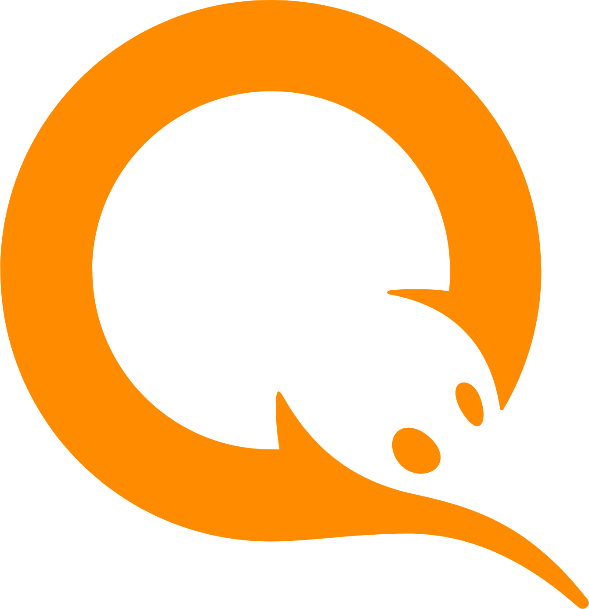

Arsentii Karpov
Android Developer | Fullstack
| Teamlead

iwi
Wallet.(2013–>2024) Android Developer–>Android Team
Lead
Status: App still
available in store despite government license revocation in 2024
Android Evolution
As an Android Developer, I’ve gone from working with Loaders and
AsyncTask to RxJava (all major versions) and now use Kotlin
Multiplatform
Key Contributions
- Joined Qiwi in March 2013 as the second Android developer
- Helped build and launch the first production versions of Qiwi
Wallet
- Promoted to Android Team Lead in 2016
- Launched Visa payWave integration via Host Card Emulation
(HCE)
- Developed the full [smartphone] ⟷ [POS terminal] protocol from
scratch
- Enabled in-app issuance of tokenized cards for NFC payments
- One of the first solutions on the Russian market
Sovest (Loyalty / Credit Card)
- Built the first version of the Sovest app
- Product later spun off into a dedicated team and codebase
Qiwi Investor
- Developed the initial cross-platform version of Qiwi Investor
- Used J2ObjC for shared logic across Android and iOS
Device Farm Integration
- Integrated Device Farm on Kubernetes into Qiwi’s CI/CD
- Presented the setup at Qiwi Android Developer Days
Support Chat SDKs
- Delivered multiple SDKs:
- Core SDK (no UI)
- Full-featured UI SDK
- Cross-platform Kotlin Multiplatform SDKs for Android & iOS
CBDC (Central Bank Digital
Currency)
- Contributed to the first version of Russia’s Digital Ruble (CBDC)
within Qiwi Wallet
- Used Kotlin Multiplatform for shared codebase
Before Qiwi
- C++ Developer at GosNIIAS (State Aviation Institute)
- JavaScript Developer at Masterdata (Salesforce integrator)
Education
Moscow Aviation Institute
Master’s degree in Information Technology (2005 → 2011)
My Engineering Approach
Able to adapt to the pace
- Comfortable working under tight deadlines, even on high-load apps
with millions of users.
- Equally confident in taking a slower, more thoughtful approach when
code quality and long-term stability matter
- Experienced with A/B testing, trunk-based development,
and release monitoring
- Know how to quickly roll back or switch off features after release
if needed
- I bring in advanced tools like RxJava, Kotlin Multiplatform, or
Dagger when the project benefits from them
- But I also know when a simple WebView with some tweaks is enough to
test and launch fast
- I aim to use the right tool for the job, not the most complex
one
Understand
complexity — and when to avoid it
- I’ve worked with Kubernetes-based device farms, CI/CD pipelines, and
production-grade monitoring tools
- At the same time, I appreciate when a small script and one intern
can solve the problem more effectively
Security & DevOps
Experience
Application Security
Leading a large fintech product means thinking about security every
day I’ve worked closely with our AppSec team throughout the development
process
- Created a custom Capture The Flag challenge for Qiwi Android
Developer Days
- Hands-on experience with Frida (Android) and Ghidra (iOS) for
reverse engineering and app security
DevOps & Infrastructure
In recent years, I’ve also worked on the DevOps side of mobile:
- Set up and delivered a Device Farm on Kubernetes for automated
testing
- Managed CI/CD using Tekton Pipelines, Argo CD, and Ansible
- Worked with observability tools like Grafana and Kibana